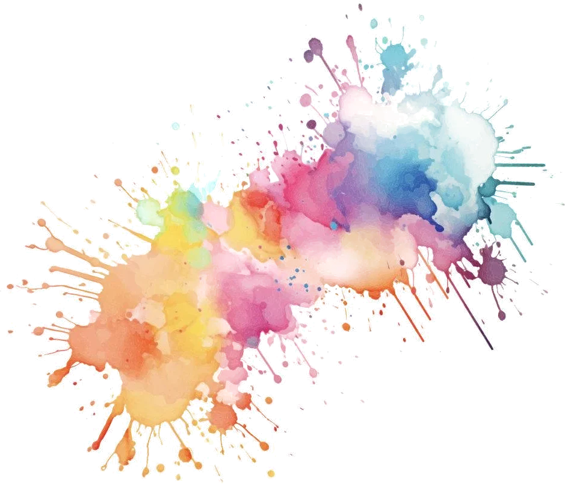
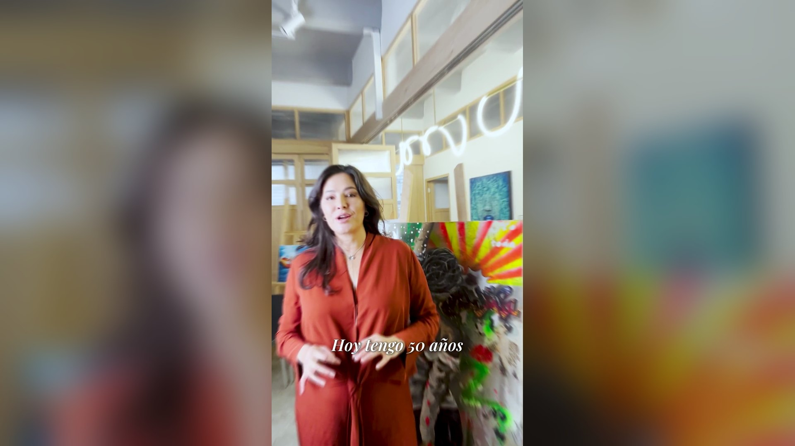
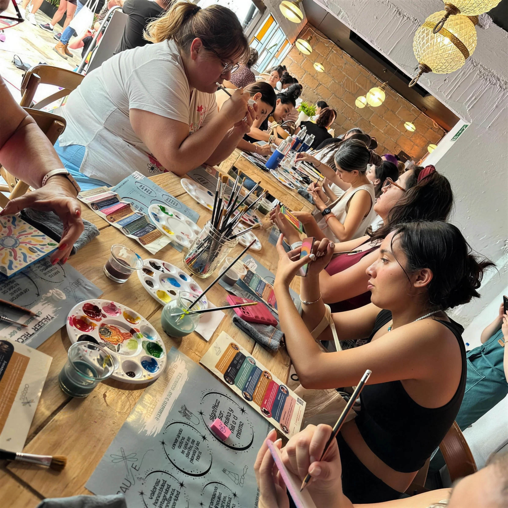
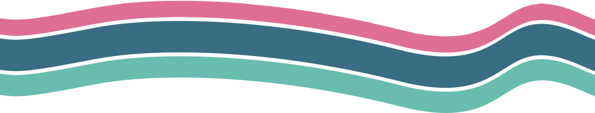
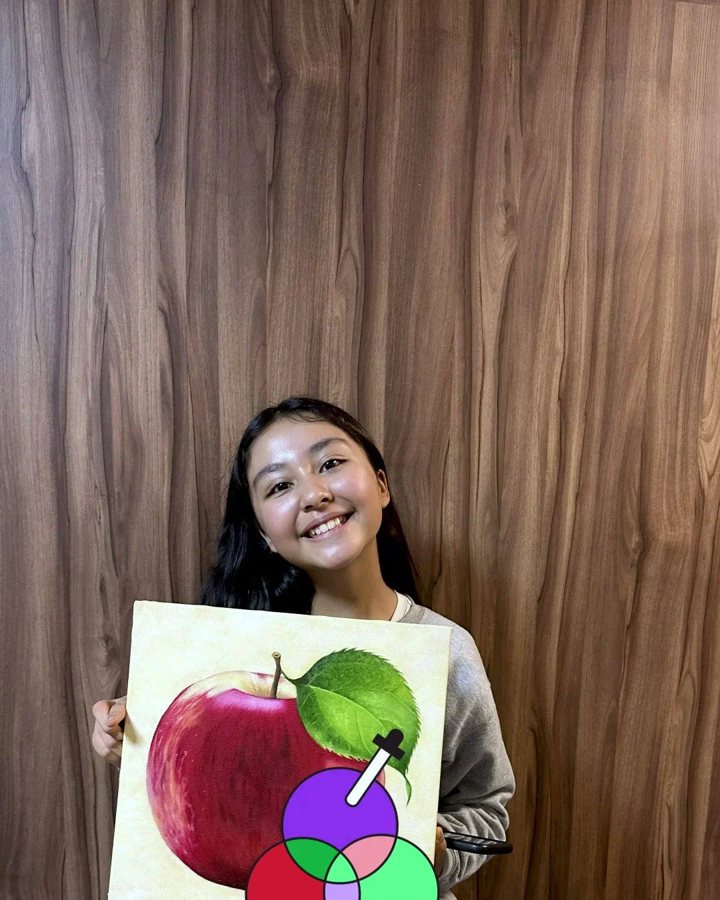
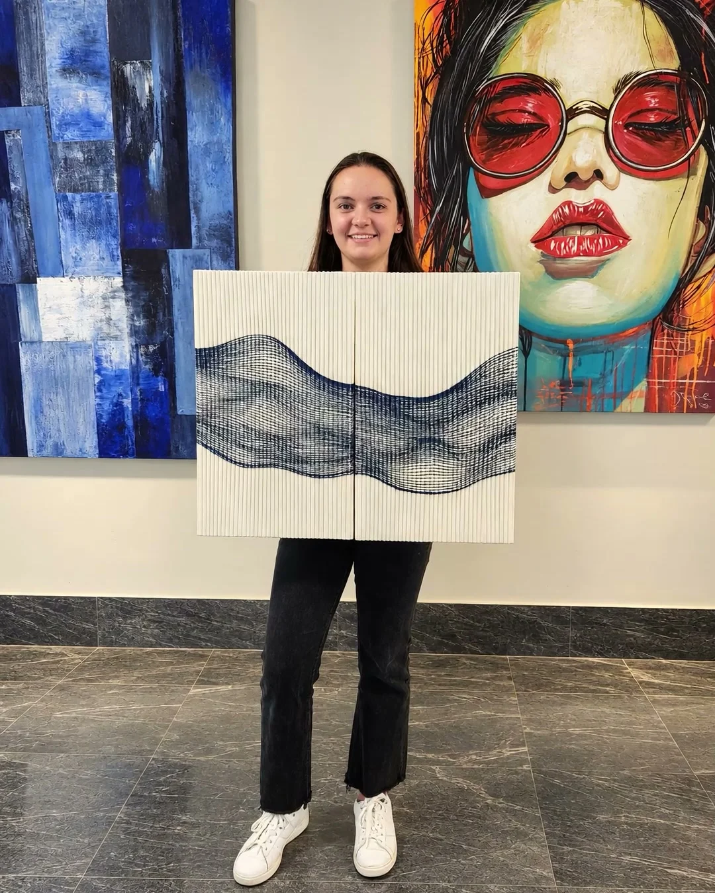

Técnicas textiles: macramé, embarrilado y telar a tu ritmo
Llevas mucho tiempo cuidando de todo y de todos. En cauSCe, en Interlomas, pintas, tejes o modelas con maestras que te guían y con el acompañamiento de psicólogas profesionales. No necesitas experiencia previa y en la mayoría de los talleres los materiales están incluidos.

cauSCe está en Parque Granada 25, Interlomas, Estado de México (Magnocentro). Talleres y arteterapia son presenciales; psicología, presencial o en línea. Los materiales están incluidos en la mayoría de los talleres.

Ya sea que quieras aprender una técnica, entender lo que sientes o regalarte un rato solo para ti, todo empieza con una clase de prueba de 1 hora o con una cita de valoración. Ahí conoces el espacio, a tu maestra o a tu psicóloga, y eliges el camino que va contigo:
Talleres de arte
Arteterapia
Psicología
Atelier y Escultura
Galería cauSCe
Empresas y eventos privados


Arte y psicología, de verdad juntos
Cada experiencia la acompañan artistas y psicoterapeutas profesionales. No es una manualidad: es un proceso para explorar, expresar y transformar lo que sientes.
Una experiencia hecha a tu medida
Grupos pequeños y maestras que te guían a tu ritmo. No necesitas experiencia previa: llegas como estés y descubres tu propio lenguaje artístico.
Un espacio seguro, solo para ti
En Interlomas, con materiales incluidos en la mayoría de los talleres. Tú solo llegas a crear, sentir y transformar.
0 años
de práctica psicoanalítica de Diana Guerra, fundadora y directora de cauSCe
0 h
por sesión en Iniciación a la Escultura: tiempo real para crear, sin prisa
$0
cuesta tu clase de prueba de 1 hora para conocer el espacio y a tu maestra

Presencial o en línea: talleres y arteterapia en nuestro espacio de Interlomas; psicología individual, en pareja o en grupo, presencial o en línea.
Reserva en 3 pasos: elige tu experiencia, selecciona fecha y horario y completa tu pago en la tienda. Tu lugar queda confirmado cuando el pago se aprueba.
Horarios flexibles: grupos en la mañana, en la tarde y en sábado, según el taller. Puedes cambiar tu horario una vez, con 24 horas de aviso y sujeto a disponibilidad.

Un centro de experiencias creativas donde el arte y la psicología se fusionan para ayudarte a descubrir, expresar y transformar tu mundo interior. Lo fundó Diana Guerra, psicoanalista con 20 años de práctica. Estamos en Parque Granada 25, Interlomas, Estado de México, dentro de Magnocentro. Cómo llegar.
No. Nuestros talleres están pensados para que explores a tu ritmo, con una maestra que te asesora en cada paso, ya sea que empieces de cero o que ya pintes.
Es un proceso. Son experiencias creativas con objetivos emocionales específicos —amor propio, autoexigencia, cambios de vida, límites— donde el arte es el medio para explorar y comprender lo que sientes, con acompañamiento psicoterapéutico. Lo importante no es que quede bonito, sino lo que descubres al hacerlo. Si buscas un proceso de terapia individual, en Psicología tienes sesiones con profesionales.
Sí. Las sesiones pueden ser individuales, en pareja o en grupo, presenciales en Interlomas o en línea. Empieza con una cita de valoración: escríbenos por WhatsApp al 55 1692 8266.
Las clases de Acrílico, óleo y técnicas mixtas y de Técnicas textiles empiezan desde $450. Los amuletos de temporada cuestan $450 cada uno o $1,300 la colección de 3, y los árboles navideños, desde $1,800. El evento empresarial es de $1,000 por persona.
Para psicología e Iniciación a la Escultura, escríbenos y te compartimos opciones. Si te inscribes a Escultura antes del 15 de diciembre, tienes 10% en tu primera mensualidad. Todos los precios están en la tienda.
En la mayoría de nuestros talleres, sí. Cada taller especifica lo que incluye en su página de la tienda.
Tu lugar queda confirmado únicamente cuando el pago es aprobado. Puedes cambiar tu horario una vez, avisando con 24 horas de anticipación y sujeto a disponibilidad. Si no asistes sin avisar, la clase no es reembolsable.
Sí. Llevamos el arte a tu empresa con experiencias creativas y desarrollo organizacional, desde $1,000 por persona. También diseñamos eventos privados de arte y bienestar para hasta 30 personas.
Sí. La obra original de la Galería cauSCe se envía a todo México.